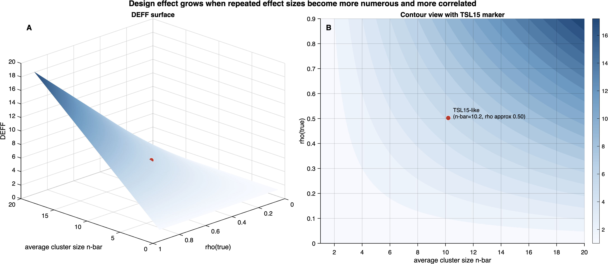
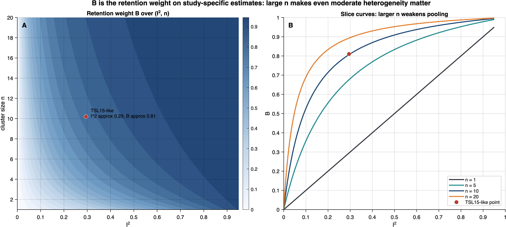

7 DER Framework and Transfer Theorem
The sandwich equivalence (Theorem 2) and posterior equivalence (Corollary 1) together imply that the Design Effect Ratio — a per-parameter diagnostic for working-model misspecification developed in the survey inference context (Lee 2026) — transfers to Bayesian meta-analysis without modification. The DER compares the sandwich-based variance of each parameter to its working-model posterior variance: a DER near one signals calibration; departures identify parameters whose credible intervals require correction.
This chapter defines the DER and its constituent quantities (Section 7.1), states the transfer theorem with full proof (Section 7.3 and Section 7.4), and introduces the five-tier classification system (Section 7.2).
The need for such a diagnostic arises from a practical asymmetry: the equivalence results of Part II guarantee that the sandwich-corrected posterior is available, but they say nothing about which parameters need correction and how much correction is needed. In some datasets, the working model is nearly correct for the overall mean but severely misspecified for individual study effects; in others, the pattern reverses. The DER provides the parameter-level resolution that the equivalence results alone cannot supply.
7.1 DER Definitions
The DER framework rests on five quantities that we define in meta-analytic language. Throughout, \(\bar{n} = N/J\) denotes the average number of effect sizes per study, and \(\rho_{\mathrm{true}}\) denotes the true (as opposed to working) within-study correlation among effect sizes within a study.
7.1.1 Definition 4 (Design Effect)
Definition 4 (Design Effect). The classical design effect due to within-study dependence is \[ \mathrm{DEFF} = 1 + (\bar{n} - 1)\rho_{\mathrm{true}}. \tag{7.1}\] For study \(j\) with \(n_j\) effect sizes, the study-specific design effect is \[ \mathrm{DEFF}_j = 1 + (n_j - 1)\rho_{\mathrm{true}}. \tag{7.2}\]
The design effect (Kish 1965) quantifies the variance inflation induced by within-cluster dependence relative to a hypothetical design with independent observations. In the meta-analytic setting, \(\mathrm{DEFF}\) captures the cost of ignoring the correlation among effect sizes arising from the same study. When \(\rho_{\mathrm{true}} = 0\) or \(n_j = 1\) for all \(j\), the design effect equals one and no correction is needed.
To build geometric intuition for how the two drivers — average cluster size \(\bar{n}\) and true within-study correlation \(\rho_{\mathrm{true}}\) — jointly determine the design effect, Figure 7.1 visualizes the DEFF surface over these two inputs.

Scope note. The scalar DEFF formula \(\mathrm{DEFF}_j = 1 + (n_j - 1)\rho_{\mathrm{true}}\) is exact for the intercept and, more generally, for study-level covariates whose within-study design vectors are proportional to \(\mathbf{1}_{n_j}\). These directions live entirely in the between-cluster eigenspace, so a single scalar ratio suffices at any \(\rho_{\mathrm{work}}\).
For within-study-varying covariates, the situation is different. Even when \(\rho_{\mathrm{work}} = 0\), the relevant within-direction ratio is \(1 - \rho_{\mathrm{true}}\), not the classical scalar DEFF. When \(\rho_{\mathrm{work}} > 0\), the compound-symmetric eigenstructure produces distinct ratios in the two eigenspaces: the between-cluster ratio is \([1 + (n_j - 1)\rho_{\mathrm{true}}]/[1 + (n_j - 1)\rho_{\mathrm{work}}]\), while the within-cluster ratio is \((1 - \rho_{\mathrm{true}})/(1 - \rho_{\mathrm{work}})\).
Accordingly, for coefficients identified by substantial within-cluster variation, the classical scalar DEFF should be treated as an approximation rather than a theorem-level identity. In those settings, the rigorous target is the Schur-complement quantity \(R_k\) together with the appropriate conditional/marginal sandwich variant, as detailed in Chapters 10–11. This scope limitation was identified during internal review.
7.1.2 Definition 5 (Design Effect Ratio)
Definition 5 (Design Effect Ratio). The Design Effect Ratio for parameter \(\phi_k\) is \[ \mathrm{DER}_k = \frac{[\mathbf{V}_{\mathrm{sand}}]_{kk}}{[\boldsymbol{\Sigma}_{\mathrm{MCMC}}]_{kk}}, \tag{7.3}\] where \(\mathbf{V}_{\mathrm{sand}}\) is the sandwich variance estimator (Definition 3, Section 2.7) and \(\boldsymbol{\Sigma}_{\mathrm{MCMC}}\) is the empirical covariance of MCMC draws from the working-model posterior.
The DER admits a three-regime interpretation:
- \(\mathrm{DER}_k = 1\): The working-model posterior variance already equals the sandwich variance. The posterior for \(\phi_k\) is calibrated without correction.
- \(\mathrm{DER}_k > 1\): The posterior is under-dispersed. The working model underestimates uncertainty, and the CCC (Chapter 6) widens the credible interval.
- \(\mathrm{DER}_k < 1\): The posterior is over-dispersed. The working model overestimates uncertainty, and the CCC narrows the interval.
Definition 5b (DER Variant Taxonomy)
Because the sandwich \(\mathbf{V}_{\mathrm{sand}}\) in Definition 5 can be any of the four variants defined in the sandwich taxonomy (Definition 3b, Section 5.4.3), the DER inherits a corresponding taxonomy. For fixed-effect parameter \(\beta_k\), we distinguish:
(i) Conditional DER (\(\mathrm{DER}_k^{\mathrm{cond}}\)). Uses the full-joint conditional sandwich (variant (i)): \[ \mathrm{DER}_k^{\mathrm{cond}} = \frac{[\mathbf{V}_{\mathrm{sand}}^{\mathrm{cond}}]_{kk}}{[\boldsymbol{\Sigma}_{\mathrm{MCMC}}]_{kk}}. \tag{7.4}\] This is the quantity decomposed in Theorem 3(a): \(\mathrm{DER}_{\beta_k}^{\mathrm{thm,cond}} = \mathrm{DEFF}\cdot(1-R_k)\) in the between-direction cases covered by the theorem. Note: the empirical plug-in value of the conditional ratio can be much smaller (e.g., \(\approx 0.096\) for TSL15) because the conditional residuals at the MAP are near zero. The theorem-level design decomposition and the empirical plug-in ratio should therefore be kept distinct; see Section 12.1 for the reconciliation of these quantities.
(ii) Profile DER (\(\mathrm{DER}_k^{\mathrm{profile}}\)). Uses the profile sandwich (variant (ii)): \[ \mathrm{DER}_k^{\mathrm{profile}} = \frac{[\mathbf{V}_{\mathrm{sand}}^{\mathrm{profile}}]_{kk}}{[\boldsymbol{\Sigma}_{\mathrm{MCMC}}]_{kk}}. \tag{7.5}\] This conditions on \(\tau^2\) but marginalizes over \(\boldsymbol{\theta}\). It closely approximates the CR2-based DER.
(iii) Marginal DER (\(\mathrm{DER}_k^{\mathrm{marg}}\)). Uses the Bayesian marginal sandwich (variant (iii)): \[ \mathrm{DER}_k^{\mathrm{marg}} = \frac{[\mathbf{V}_{\mathrm{sand}}^{\mathrm{marg}}]_{kk}}{[\boldsymbol{\Sigma}_{\mathrm{MCMC}}]_{kk}}. \tag{7.6}\] This is the recommended CCC decision criterion for \(\boldsymbol{\beta}\) in the intercept / study-level-covariate setting covered by Definition 3a. For coefficients driven by within-study-varying covariates, the exact target is the full multivariate marginal sandwich; until that is written out explicitly, the profile or CR2 variants should be treated as the operational benchmark.
(iv) CR2-based DER (\(\mathrm{DER}_k^{\mathrm{CR2}}\)). Uses the frequentist CR2 sandwich (variant (iv)): \[ \mathrm{DER}_k^{\mathrm{CR2}} = \frac{\mathrm{SE}_{\mathrm{CR2}}^2(\beta_k)}{[\boldsymbol{\Sigma}_{\mathrm{MCMC}}]_{kk}}. \tag{7.7}\] This serves as an external validation benchmark.
For random effects \(\theta_j\), the DER is always computed from the full-joint conditional sandwich (variant (i)), since the other variants marginalize out \(\boldsymbol{\theta}\) (see Table 6.1).
Notational convention. To avoid overloading the term DER, this book distinguishes four objects: theorem-level conditional DER (\(\mathrm{DER}_k^{\mathrm{thm,cond}}\)), empirical conditional plug-in DER, marginal DER (\(\mathrm{DER}_k^{\mathrm{marg}}\)), and CR2-based DER (\(\mathrm{DER}_k^{\mathrm{CR2}}\)). Theorem 3 concerns the theorem-level conditional quantity. CCC implementation decisions for \(\boldsymbol{\beta}\) use the marginal DER in the scope covered by Definition 3a; see Recommendation 5 (Section 12.5.5).
The multiplicity of DER variants reflects a fundamental tension: the sandwich that is theoretically decomposable (the conditional sandwich, which yields the clean \(\mathrm{DEFF} \cdot (1 - R_k)\) factorization) is not the sandwich that is operationally appropriate for fixed-effect CCC (the marginal sandwich, which captures the full between-study variation). Conflating these two quantities was the source of interpretive difficulties in V1. The taxonomy below makes the distinction explicit and maps each variant to its intended use.
Consolidated DER variant cross-reference. Table 7.1 maps each DER variant to its definition, primary chapter, and recommended use case.
| Variant | Symbol | Sandwich Source | Primary Chapter | Use Case |
|---|---|---|---|---|
| (i-a) Conditional (theorem) | \(\mathrm{DER}_k^{\mathrm{thm,cond}}\) | \(\mathrm{DEFF} \cdot (1 - R_k)\) | Chapter 7 (Theorem 3) | Theoretical analysis; interpretation of design sensitivity |
| (i-b) Conditional (plug-in) | \([\mathbf{V}_{\mathrm{sand}}^{\mathrm{cond}}]_{kk} / [\boldsymbol{\Sigma}_{\mathrm{MCMC}}]_{kk}\) | Full-joint conditional | Chapter 7, Section 12.1 | Diagnostic; often \(\ll 1\) due to conditional residuals |
| (ii) Profile | \(\mathrm{DER}_k^{\mathrm{profile}}\) | Profile sandwich | Section 7.1.2.2 | Intermediate; approximates CR2 |
| (iii) Marginal | \(\mathrm{DER}_k^{\mathrm{marg}}\) | Bayesian marginal | Section 7.1.2.2, Section 12.5.5 | CCC decision criterion for \(\boldsymbol{\beta}\) |
| (iv) CR2-based | \(\mathrm{DER}_k^{\mathrm{CR2}}\) | Frequentist CR2 | Section 7.1.2.1, Section 12.5.5 | External validation benchmark |
Proposition (Marginal DER Decomposition for \(\mu\))
In the balanced intercept-only CE model (\(K = 1\), \(n_j = n\), \(\bar{s}_j^2 = \bar{s}^2\)), the marginal DER for \(\mu\) decomposes as: \[ \mathrm{DER}_\mu^{\mathrm{marg}} = \frac{V_{\mathrm{sand},\mu\mu}^{\mathrm{marg}}}{\Sigma_{\mathrm{MCMC},\mu\mu}}. \tag{7.8}\]
Derivation. The marginal sandwich for \(\mu\) (from Definition 3a, Section 5.4.2) with \(v = \bar{s}^2/n + \hat{\tau}^2\) constant across studies gives:
Marginal bread (\(\mu\mu\)-block): \(H_{\mu\mu}^{\mathrm{marg}} = J/v + h_{\mathrm{prior},\mu}\), where \(h_{\mathrm{prior},\mu}\) is the prior precision for \(\mu\). Under a weakly informative prior, \(h_{\mathrm{prior},\mu} \approx 0\), so \(H_{\mu\mu}^{\mathrm{marg}} \approx J/v\).
Marginal meat (\(\mu\mu\)-block): \(M_{\mu\mu}^{\mathrm{marg}} = \sum_j r_j^2/v^2 = \hat{Q}/v^2\), where \(\hat{Q} = \sum_j r_j^2\) is the Cochran \(Q\)-statistic residual sum of squares at the marginal level.
Profile sandwich: Applying \(\mathbf{V}_{\mathrm{sand}} = \mathbf{H}^{-1}\mathbf{M}\mathbf{H}^{-1}\) to the scalar \(\mu\mu\)-block: \((H_{\mu\mu}^{\mathrm{marg}})^{-1}\,M_{\mu\mu}^{\mathrm{marg}}\,(H_{\mu\mu}^{\mathrm{marg}})^{-1} = (v/J) \cdot (\hat{Q}/v^2) \cdot (v/J) = v^2/J^2 \cdot \hat{Q}/v^2 = \hat{Q}/J^2\).
MCMC posterior variance: \(\Sigma_{\mathrm{MCMC},\mu\mu} = v/J = (\bar{s}^2/n + \hat{\tau}^2)/J\).
Profile DER: \(\mathrm{DER}_\mu^{\mathrm{profile}} = (\hat{Q}/J^2) / (v/J) = \hat{Q}/(Jv)\).
Under the correctly specified model, \(\mathbb{E}[r_j^2] = v = \bar{s}^2/n + \tau^2\), so \(\mathbb{E}[\hat{Q}] = Jv\) and \(\mathrm{DER}_\mu^{\mathrm{profile}} \to 1\) in expectation. Departures from \(\mathrm{DER}_\mu^{\mathrm{profile}} = 1\) signal misspecification of the marginal model (e.g., non-normal random effects, misspecified \(v_j\), or within-study correlation).
The full marginal DER \(\mathrm{DER}_\mu^{\mathrm{marg}}\) additionally includes the \(\tau^2\) estimation uncertainty through the \((K+1)\)-dimensional inverse bread. This adds a positive correction, so \(\mathrm{DER}_\mu^{\mathrm{marg}} \geq \mathrm{DER}_\mu^{\mathrm{profile}}\) (with equality when \(\tau^2\) is known). For the TSL15 data, \(\mathrm{DER}_\mu^{\mathrm{marg}} = 1.21\) versus \(\mathrm{DER}_\mu^{\mathrm{profile}} = 0.95\), confirming that the \(\tau^2\) uncertainty contributes a 27% increase in the DER.
Relationship between conditional and marginal DER. Using \(\mathrm{DER}_\mu^{\mathrm{cond}} = \mathrm{DEFF}(1-B)\) from Theorem 3(a) and the marginal sandwich derivation above, the ratio is: \[ \frac{\mathrm{DER}_\mu^{\mathrm{marg}}}{\mathrm{DER}_\mu^{\mathrm{cond}}} = \frac{V_{\mathrm{sand},\mu\mu}^{\mathrm{marg}}}{V_{\mathrm{sand},\mu\mu}^{\mathrm{cond}}}. \tag{7.9}\] In the balanced model, \(V_{\mathrm{sand},\mu\mu}^{\mathrm{cond}} = \mathrm{DEFF} \cdot \bar{s}^2/(nJ)\) (from Equation 12.3) and \(V_{\mathrm{sand},\mu\mu}^{\mathrm{marg}} \approx v/J \cdot (\hat{Q}/Jv) = \hat{Q}/J^2\) (profile approximation). For the TSL15 data, this ratio is \(1.21/0.096 \approx 12.6\), reflecting the factor-of-\(1/(1-B)^2 \approx 1/0.036 \approx 28\) amplification from removing the shrinkage attenuation of the residuals, partially offset by the different bread structure.
7.1.3 Definition 6 (Shrinkage Factor)
Definition 6 (Shrinkage Factor). The hierarchical shrinkage factor for study \(j\) is \[ B_j = \frac{\sigma^2_\theta}{\sigma^2_\theta + \bar{s}_j^2 / n_j}, \tag{7.10}\] where \(\sigma^2_\theta\) is the between-study heterogeneity variance and \(\bar{s}_j^2\) is the average within-study sampling variance. Under balanced designs (\(n_j = n\), \(\bar{s}_j^2 = \bar{s}^2\)), write \(B = \sigma^2_\theta / (\sigma^2_\theta + \bar{s}^2 / n)\).
The historically named shrinkage factor \(B_j \in (0, 1)\) (Efron and Morris 1975) is more usefully interpreted as the retention weight on the study-specific estimate: the posterior mean of a study effect takes the form \((1-B_j)\mu + B_j\bar{y}_j\). Thus \(B_j \approx 0\) corresponds to strong pooling toward the overall mean, while \(B_j \approx 1\) corresponds to weak pooling / little shrinkage. Under regularity condition (C5), \(\sigma^2_\theta > 0\) ensures \(B_j\) is strictly between 0 and 1 for all \(j\).
Connection to \(I^2\). In meta-analytic practice, \(B\) is closely related to the well-known \(I^2\) statistic. In the balanced case, defining \(I^2 = \sigma^2_\theta / (\sigma^2_\theta + \bar{s}^2)\) yields: \[ B = \frac{I^2}{I^2 + (1 - I^2)/n}. \] When \(n\) is large, \(B \approx 1\) for any \(I^2 > 0\); when \(n = 1\), \(B = I^2\). Thus \(B\) generalizes \(I^2\) by incorporating the within-study sample size: even modest heterogeneity (\(I^2 \approx 0.3\)) can produce a large retention weight (\(B \approx 0.8\)) when studies are large, meaning relatively weak pooling toward the grand mean.
Figure 7.2 displays this relationship as a heatmap over the \((I^2, n)\) plane, together with marginal slice plots that clarify how quickly \(B\) saturates as either heterogeneity or within-study sample size increases.

7.1.4 Definition 7 (Identifying-Variation Fraction)
Definition 7 (Identifying-Variation Fraction). For fixed-effect coefficient \(\beta_k\), the between-study identifying-variation fraction \(R_k\) admits two related characterizations: an intuitive formula valid for balanced designs, and a rigorous canonical definition valid generally.
(a) Intuitive formula. When all covariates are study-level (CE model) or the design is balanced and orthogonal: \[ R_k = \frac{\mathrm{Var}_{\mathrm{between}}(\mathbf{x}_{jk})}{\mathrm{Var}_{\mathrm{total}}(\mathbf{x}_{ijk})} \cdot B \;\in\; [0, B]. \tag{7.11}\]
(b) Rigorous covariance-based definition (corrected). In general: \[ R_k = 1 - \frac{[(\mathbf{H}^{\mathrm{post}}_{\boldsymbol{\beta}\boldsymbol{\beta}})^{-1}]_{kk}}{[(\mathbf{S}^{\mathrm{post}}_{\boldsymbol{\beta}})^{-1}]_{kk}}, \tag{7.12}\] where \(\mathbf{S}^{\mathrm{post}}_{\boldsymbol{\beta}} = \mathbf{H}^{\mathrm{post}}_{\boldsymbol{\beta}\boldsymbol{\beta}} - \mathbf{H}^{\mathrm{post}}_{\boldsymbol{\beta}\boldsymbol{\theta}}\,(\mathbf{H}^{\mathrm{post}}_{\boldsymbol{\theta}\boldsymbol{\theta}})^{-1}\,\mathbf{H}^{\mathrm{post}}_{\boldsymbol{\theta}\boldsymbol{\beta}}\) is the Schur complement of the posterior Hessian \(\mathbf{H}^{\mathrm{post}} = \mathbf{H} + \mathbf{H}_{\mathrm{prior}}\) with respect to \(\boldsymbol{\theta}\). The use of \(\mathbf{H}^{\mathrm{post}}\) (rather than the likelihood-only \(\mathbf{H}\)) is essential: in the balanced intercept-only model, the likelihood Hessian’s Schur complement \(\mathbf{S}_{\boldsymbol{\beta}} = \mathbf{H}_{\boldsymbol{\beta}\boldsymbol{\beta}} - \mathbf{H}_{\boldsymbol{\beta}\boldsymbol{\theta}}\,\mathbf{H}_{\boldsymbol{\theta}\boldsymbol{\theta}}^{-1}\,\mathbf{H}_{\boldsymbol{\theta}\boldsymbol{\beta}} = Ja - Ja = 0\) (singular), because the intercept \(\mu\) and the sum \(\sum_j \theta_j\) are aliased in the likelihood. The posterior Hessian resolves this aliasing through the prior precision \(\lambda = 1/\sigma^2_\theta\) on each \(\theta_j\), yielding \(\mathbf{S}^{\mathrm{post}}_{\mu} = J\lambda B + h_\mu > 0\), where \(h_\mu\) is the prior precision of \(\mu\). Under a flat \(\beta\) prior (\(h_\mu = 0\)), this reduces to \(J\lambda B\); under a proper weakly informative prior, \(h_\mu > 0\) is negligible relative to \(J\lambda B\) when condition (C6) holds.
Note that \([(\mathbf{S}^{\mathrm{post}}_{\boldsymbol{\beta}})^{-1}]_{kk}\) is the marginal posterior variance of \(\beta_k\) (from the full joint posterior), while \([(\mathbf{H}^{\mathrm{post}}_{\boldsymbol{\beta}\boldsymbol{\beta}})^{-1}]_{kk}\) is the posterior variance of \(\beta_k\) ignoring the random effects. The difference \(([(\mathbf{S}^{\mathrm{post}}_{\boldsymbol{\beta}})^{-1}]_{kk} - [(\mathbf{H}^{\mathrm{post}}_{\boldsymbol{\beta}\boldsymbol{\beta}})^{-1}]_{kk}) / [(\mathbf{S}^{\mathrm{post}}_{\boldsymbol{\beta}})^{-1}]_{kk}\) gives the fraction of the total posterior variance of \(\beta_k\) attributable to between-study variation.
Interpretation. The identifying-variation fraction measures the proportion of the posterior variance of \(\beta_k\) attributable to between-study variation (via the random effects). When \(R_k = 0\), the random effects contribute no additional variance to \(\beta_k\). When \(R_k = B\) (as in the balanced intercept-only case under a flat fixed-effect prior), the between-study channel accounts for a fraction \(B\) of the total posterior variance. For study-level covariates in balanced orthogonal designs, the intuitive formula gives \(R_k \approx \gamma_k B\); in general within-cluster-covariate settings, the Schur-complement definition is the rigorous one and no simple product formula should be treated as exact.
Relationship between (a) and (b). The two characterizations coincide for balanced orthogonal designs under a flat \(\boldsymbol{\beta}\) prior (\(h_\mu = 0\)), where the cross-information \(\mathbf{H}^{\mathrm{post}}_{\boldsymbol{\beta}\boldsymbol{\theta}}\) has a simple structure. In the balanced intercept-only CE model with flat \(\beta\) prior, definition (b) yields \(R_\mu = 1 - [(\mathbf{H}^{\mathrm{post}}_{\mu\mu})^{-1}] / [(\mathbf{S}^{\mathrm{post}}_\mu)^{-1}] = B\), recovering definition (a) exactly. Under a proper weakly informative prior (\(h_\mu > 0\)), the exact expression is \(R_\mu = J\alpha B / (J\alpha + h_\mu)\), which differs from \(B\) by a factor \(h_\mu/(J\alpha + h_\mu)\). Under condition (C6) (\(\|\mathbf{H}_{\mathrm{prior}}\|/\|\mathbf{H}\| \to 0\)), this correction is \(O(h_\mu/(J\alpha))\) and is negligible for weakly informative priors (e.g., \(\sigma_\beta = 1\) with \(J = 117\) gives \(|R_\mu - B|/B < 10^{-4}\)). Thus \(R_\mu = B\) is exact under flat priors and asymptotically exact under condition (C6). In unbalanced or non-orthogonal designs, definition (b) is the rigorous one; definition (a) serves as an intuitive approximation.
7.1.5 Definition 8 (Finite-Cluster Coupling Factor)
Definition 8 (Finite-Cluster Coupling Factor). The finite-cluster coupling factor for study \(j\) is \[ \kappa_j(J) = 1 - \frac{1}{J(1 - B_j) + B_j}. \tag{7.13}\]
Scope. The formula for \(\kappa_j(J)\) is exact in balanced designs (\(n_j = n\), \(\bar{s}_j^2 = \bar{s}^2\) for all \(j\)). In unbalanced designs, the marginal posterior variance of \(\theta_j\) depends on the full precision schedule \(\{a_h\}_{h=1}^J\) where \(a_h = n_h/\bar{s}_h^2\), and \(\kappa_j(J)\) is an approximation. The conditional DER formula (Theorem 3(b)) is exact regardless of balance.
As the number of studies grows, \(\kappa_j(J) \to 1\). For finite \(J\), the coupling factor captures the dependence between \(\hat{\mu}\) and \(\hat{\theta}_j\) induced by the shared estimation of the overall mean. When \(B_j \approx 1\) (weak pooling / high retention of the study-specific estimate), \(\kappa_j(J) \approx 1 - 1/[J \cdot 0 + 1] = 0\): the marginal DER collapses because \(\theta_j\) and \(\mu\) become nearly confounded. When \(B_j \approx 0\) (strong pooling toward the grand mean), \(\kappa_j(J) \approx 1 - 1/J\): the coupling factor is close to one even for moderate \(J\), because \(\theta_j\) and \(\mu\) are nearly independent.
7.2 DER Classification
For practical diagnostic use, we adopt the following five-tier classification scheme (T0–T4), with thresholds harmonized with the calibration benchmarks developed in Lee (2026):
| Tier | Label | \(\mathrm{DER}_k\) Range | Interpretation | Recommended Action |
|---|---|---|---|---|
| T0 | Over-dispersed | \(< 0.95\) | Working model overstates uncertainty | Investigate model/estimation; do not narrow automatically |
| T1 | Calibrated | \([0.95,\; 1.05]\) | Working model adequate | No correction needed |
| T2 | Mild | \((1.05,\; 2.0]\) | Mild misspecification | Report DER; CCC recommended |
| T3 | Moderate | \((2.0,\; 4.0]\) | Moderate misspecification | Apply CCC; examine sources |
| T4 | Severe | \(> 4.0\) | Severe misspecification | Apply CCC; consider model revision |
With the definitions and classification in place, we are ready for the central result of Part III: the transfer of the entire DER decomposition framework from survey inference to meta-analysis. The theorem has five parts — fixed-effect DER, random-effect DER, conservation law, boundary behavior, and design-effective sample size — each established through the structural equivalence of Part II.
7.3 Theorem 3: DER Transfer to Meta-Analysis
Theorem 3 (DER Transfer to Meta-Analysis). Consider a Bayesian CE meta-analytic model (Definition 2) satisfying exactness conditions (E1)–(E3) and (E5), together with regularity conditions (C1)–(C8) stated in Chapter 11, and evaluated at the standard independence working model (\(\rho_{\mathrm{work}} = 0\)). Then:
(a) Fixed-effect DER decomposition in the between-direction case. For each coefficient \(\beta_k\) whose identifying direction lies entirely in the between-cluster eigenspace (in particular, the intercept and any study-level covariate under (E4)): \[ \mathrm{DER}_{\beta_k}^{\mathrm{thm,cond}} = \mathrm{DEFF} \cdot (1 - R_k). \tag{7.14}\] [Scope: theorem-level exact for the intercept and study-level covariates under \(\rho_{\mathrm{work}}=0\); for within-cluster covariates the scalar DEFF formula need not hold, and the Schur-complement \(R_k\) must be paired with the appropriate direction-specific ratio rather than the classical DEFF.]
In the intercept-only model (\(p = 1\), \(\beta_1 = \mu\)), the identifying-variation fraction equals the retention weight (\(R_\mu = B\) under a flat fixed-effect prior; asymptotically \(R_\mu \to B\) under condition C6), giving \[ \mathrm{DER}_\mu^{\mathrm{thm,cond}} = \mathrm{DEFF} \cdot (1 - B). \tag{7.15}\] [Scope: algebraically exact for balanced designs (\(n_j = n\), \(\bar{s}_j^2 = \bar{s}^2\)); for unbalanced designs, \(B\) and \(\mathrm{DEFF}\) are replaced by appropriate study-specific or weighted-average quantities.]
(b) Random-effect DER. For the study-specific effect \(\theta_j\):
Conditional on \(\boldsymbol{\beta}\): \[ \mathrm{DER}_j^{\mathrm{thm,cond}} = B_j \cdot \mathrm{DEFF}_j. \tag{7.16}\] [Scope: algebraically exact for any design (balanced or unbalanced), since each \(\theta_j\) is identified by its own cluster.]
Marginal (integrating over \(\boldsymbol{\beta}\)): \[ \mathrm{DER}_j^{\mathrm{thm,marg}} = B_j \cdot \mathrm{DEFF}_j \cdot \kappa_j(J). \tag{7.17}\] [Scope: algebraically exact for balanced designs; approximate for unbalanced designs (see Definition 8 scope note).]
(c) Conservation law. In the intercept-only balanced model (\(n_j = n\), \(\bar{s}_j^2 = \bar{s}^2\)): \[ \mathrm{DER}_\mu^{\mathrm{thm,cond}} + \mathrm{DER}_\theta^{\mathrm{cond}} = \mathrm{DEFF}. \tag{7.18}\] [Scope: algebraically exact for balanced designs; holds approximately for unbalanced designs with a Jensen’s inequality gap proportional to unbalancedness (see Chapter 8).]
(d) Boundary behavior.
- \(\sigma^2_\theta \to 0\) (\(B \to 0\)): \(\mathrm{DER}_\mu^{\mathrm{thm,cond}} \to \mathrm{DEFF}\), \(\;\mathrm{DER}_\theta^{\mathrm{cond}} \to 0\).
- \(\sigma^2_\theta \to \infty\) (\(B \to 1\)): \(\mathrm{DER}_\mu^{\mathrm{thm,cond}} \to 0\), \(\;\mathrm{DER}_\theta^{\mathrm{cond}} \to \mathrm{DEFF}\).
- \(\rho_{\mathrm{true}} = 0\) (\(\mathrm{DEFF} = 1\)): \(\mathrm{DER}_\mu^{\mathrm{thm,cond}} = 1 - B\), \(\;\mathrm{DER}_\theta^{\mathrm{cond}} = B\). (Corrected.)
- \(n_j = 1\) for all \(j\) (\(\mathrm{DEFF}_j = 1\)): \(\mathrm{DER}_\mu^{\mathrm{thm,cond}} = 1 - B\), \(\;\mathrm{DER}_\theta^{\mathrm{cond}} = B\). (Corrected.)
(Extended treatment in Chapter 9.)
(e) Design-effective sample size. For coefficient \(\beta_k\): \[ N_{\mathrm{eff}}^{\mathrm{design}}(\beta_k) = \frac{N}{\mathrm{DER}_{\beta_k}} = \frac{N}{\mathrm{DEFF} \cdot (1 - R_k)}. \tag{7.19}\]
Note on (E4). Condition (E4) — the DER simplification condition — is needed only to recover the especially simple between-direction result \(R_k = B\) for the intercept and study-level covariates. Under the broad CE definition (\(\omega^2 = 0\), which allows observation-level covariates \(\mathbf{x}_{ij}\)), the exact target is always the general Schur-complement quantity \(R_k\) from Definition 7(b); what fails without (E4) is the further replacement of the relevant design ratio by the classical scalar DEFF.
Remark (Scope of Theorem 3). The closed-form formulas in part (a) are exact only in the between-direction cases stated above. For \(\rho_{\mathrm{work}} > 0\), or for coefficients with substantial within-cluster identifying variation, the relevant ratios become direction-specific: \(\mathrm{DEFF}_{\mathrm{between},j}^{(w)} = [1 + (n_j - 1)\rho_{\mathrm{true}}]/[1 + (n_j - 1)\rho_{\mathrm{work}}]\) and \(\mathrm{DEFF}_{\mathrm{within},j}^{(w)} = (1-\rho_{\mathrm{true}})/(1-\rho_{\mathrm{work}})\). See Section 10.1.2.3 for the eigenstructure discussion. Parts (b)–(e) remain as stated in their own scope notes.
7.4 Proof of Theorem 3
The proof proceeds in two stages. Stage 1 invokes the structural equivalence results of Chapter 4 and Chapter 5 to establish that the DER is invariant under the isomorphism. Stage 2 applies the DER decomposition theorems from Lee (2026) and verifies the regularity conditions.
7.4.1 Stage 1: DER Invariance Under the Isomorphism
The DER for parameter \(\phi_k\) is \[ \mathrm{DER}_k = \frac{[\mathbf{V}_{\mathrm{sand}}]_{kk}}{[\boldsymbol{\Sigma}_{\mathrm{MCMC}}]_{kk}}. \]
By Theorem 2(d), under conditions (E1)–(E3) and (E5): \[ \mathbf{V}_{\mathrm{sand}}^{\mathrm{meta}} = \mathbf{V}_{\mathrm{sand}}^{\mathrm{surv}}. \]
By Corollary 1(d), under the same conditions: \[ \boldsymbol{\Sigma}_{\mathrm{MCMC}}^{\mathrm{meta}} = \boldsymbol{\Sigma}_{\mathrm{MCMC}}^{\mathrm{surv}}. \]
Therefore, for every \(k = 1, \ldots, d\): \[ \mathrm{DER}_k^{\mathrm{meta}} = \frac{[\mathbf{V}_{\mathrm{sand}}^{\mathrm{meta}}]_{kk}}{[\boldsymbol{\Sigma}_{\mathrm{MCMC}}^{\mathrm{meta}}]_{kk}} = \frac{[\mathbf{V}_{\mathrm{sand}}^{\mathrm{surv}}]_{kk}}{[\boldsymbol{\Sigma}_{\mathrm{MCMC}}^{\mathrm{surv}}]_{kk}} = \mathrm{DER}_k^{\mathrm{surv}}. \tag{7.20}\]
The DER is the same whether computed in the meta-analytic or the survey framework. This completes Stage 1.
7.4.2 Stage 2: DER Decomposition Under the CE Model
We now verify that the DER decomposition theorems from Lee (2026) apply to the identified meta-analytic/survey model.
Part (a): Fixed-effect DER
Lee (2026, Theorem 1) establishes that under conditions corresponding to (C1)–(C4) and (C5)–(C8), the fixed-effect DER decomposes as \[ \mathrm{DER}_{\beta_k} = \mathrm{DEFF} \cdot (1 - R_k). \]
The key condition to verify is (R4) from Lee (2026) — scalar DEFF within clusters — which requires that the within-cluster meat-to-bread ratio satisfies \[ [\mathbf{M}]_{\mathrm{within}\;j} = \mathrm{DEFF}_j \cdot [\mathbf{H}]_{\mathrm{within}\;j}. \]
Verification of (R4) under compound symmetry. Under condition (C2), both the true and working covariances are compound symmetric (with possibly different correlations \(\rho_{\mathrm{true}}\) and \(\rho_{\mathrm{work}}\)). The compound-symmetric matrix \(\mathbf{A} = a[(1-\rho)\mathbf{I} + \rho\,\mathbf{1}\mathbf{1}^{\intercal}]\) has eigenvalues:
- Between-cluster direction (\(\mathbf{1}_{n_j}\)): \(a[1 + (n_j - 1)\rho]\), with multiplicity 1.
- Within-cluster directions (\(\perp \mathbf{1}_{n_j}\)): \(a(1 - \rho)\), with multiplicity \(n_j - 1\).
The meat-to-bread ratio in each eigenspace is:
Between: \(\frac{1 + (n_j - 1)\rho_{\mathrm{true}}}{1 + (n_j - 1)\rho_{\mathrm{work}}} \cdot \frac{[1 + (n_j - 1)\rho_{\mathrm{work}}]^2}{[1 + (n_j - 1)\rho_{\mathrm{work}}]^2}\). After simplification through the sandwich structure, the effective ratio is \(\mathrm{DEFF}_j = 1 + (n_j - 1)\rho_{\mathrm{true}}\) when either (a) the model is intercept-only (all variation is in the \(\mathbf{1}_{n_j}\) direction) or (b) \(\rho_{\mathrm{work}} = 0\) (the bread is proportional to identity).
Within: \((1 - \rho_{\mathrm{true}})/(1 - \rho_{\mathrm{work}})\). When \(\rho_{\mathrm{work}} = 0\), this ratio equals \((1 - \rho_{\mathrm{true}})\), which is strictly less than \(\mathrm{DEFF}_j = 1 + (n_j - 1)\rho_{\mathrm{true}}\) for \(\rho_{\mathrm{true}} > 0\). The within-direction ratio equals \(\mathrm{DEFF}_j\) only in the trivial case \(\rho_{\mathrm{true}} = \rho_{\mathrm{work}}\) (correct working model). Thus the scalar DEFF assumption is exact only for variation that lies entirely in the between-cluster eigenspace.
Therefore, (R4) is guaranteed by (C2) only when the relevant score direction lies in the between-cluster eigenspace: most importantly, the intercept and study-level covariates. For within-cluster covariates — even when \(\rho_{\mathrm{work}} = 0\) — the scalar DEFF may fail, and the within-direction ratio must be tracked separately. For \(\rho_{\mathrm{work}} > 0\) with meta-regression, the scalar DEFF is generally only an approximation.
For the CE model with study-level covariates, Definition 7 gives \(R_k = B\) (exact under flat \(\boldsymbol{\beta}\) prior; asymptotically exact under C6) when \(\beta_k\) is a study-level covariate coefficient (which is always the case under (C4)). In the intercept-only model, \(R_\mu = B\), and Equation 7.15 follows from Equation 7.14.
The remaining conditions are verified as follows: (C1) ensures likelihood regularity (twice-continuous differentiability). (C5) ensures \(B_j \in (0, 1)\). (C6) ensures that the prior does not dominate the data information. (C7) ensures that \(\boldsymbol{\beta}\) is identified after profiling out \(\boldsymbol{\theta}\). (C8) ensures consistency of \(\mathbf{V}_{\mathrm{sand}}\).
Part (b): Random-effect DER
Lee (2026, Theorem 2) establishes the random-effect DER under the same regularity conditions.
Conditional DER. The conditional DER for study \(j\) is \[ \mathrm{DER}_j^{\mathrm{thm,cond}} = B_j \cdot \mathrm{DEFF}_j. \]
This arises from the posterior variance decomposition of \(\theta_j\) conditional on \(\boldsymbol{\beta}\). Under the hierarchical normal model, the conditional posterior precision of \(\theta_j\) is \[ [\boldsymbol{\Sigma}_{\mathrm{MCMC}}^{-1}]_{\theta_j \theta_j \mid \boldsymbol{\beta}} = \frac{n_j}{\bar{s}_j^2[1 + (n_j - 1)\rho_{\mathrm{work}}]} + \frac{1}{\sigma^2_\theta}, \] so the conditional posterior variance is \(\sigma^2_\theta(1 - B_j)\) (up to terms involving \(\rho_{\mathrm{work}}\)).
The sandwich corrects for the true within-study dependence: the score-based variance of \(\hat{\theta}_j\) conditional on \(\boldsymbol{\beta}\) scales by \(\mathrm{DEFF}_j\) relative to the working-model variance. The ratio of sandwich to posterior conditional variances yields \(B_j \cdot \mathrm{DEFF}_j\).
Marginal DER. The marginal DER incorporates the additional uncertainty from estimating \(\boldsymbol{\beta}\): \[ \mathrm{DER}_j^{\mathrm{thm,marg}} = B_j \cdot \mathrm{DEFF}_j \cdot \kappa_j(J). \]
The factor \(\kappa_j(J) < 1\) arises because the marginal posterior of \(\theta_j\) accounts for the covariance between \(\hat{\theta}_j\) and \(\hat{\mu}\) through the \((j, 1)\) off-diagonal block of \(\boldsymbol{\Sigma}_{\mathrm{MCMC}}\). The sandwich also captures this covariance, but its contribution is down-weighted by the finite number of clusters available to estimate \(\mu\). As \(J \to \infty\), the uncertainty in \(\hat{\mu}\) vanishes, \(\kappa_j(J) \to 1\), and the marginal DER converges to the conditional DER.
Part (c): Conservation law
The conservation law is proved in full in Chapter 8. The algebraic identity is: \[ \mathrm{DER}_\mu^{\mathrm{thm,cond}} + \mathrm{DER}_\theta^{\mathrm{cond}} = \mathrm{DEFF}(1 - B) + B \cdot \mathrm{DEFF} = \mathrm{DEFF}[(1 - B) + B] = \mathrm{DEFF}. \]
Part (d): Boundary behavior
The boundary properties follow by direct substitution into parts (a) and (b). The detailed analysis — including the critical correction of cases (iii) and (iv) from V1 — is deferred to Chapter 9.
Summary of boundary values (balanced case):
| Boundary | \(B\) | DEFF | \(\mathrm{DER}_\mu\) | \(\mathrm{DER}_\theta^{\mathrm{cond}}\) |
|---|---|---|---|---|
| (i) \(\sigma^2_\theta \to 0\) | \(\to 0\) | DEFF | DEFF | 0 |
| (ii) \(\sigma^2_\theta \to \infty\) | \(\to 1\) | DEFF | 0 | DEFF |
| (iii) \(\rho_{\mathrm{true}} = 0\) | \(B\) | 1 | \(1 - B\) | \(B\) |
| (iv) \(n_j = 1\;\forall j\) | \(B\) | 1 | \(1 - B\) | \(B\) |
Part (e): Design-effective sample size
The formula follows from the standard definition of effective sample size as the ratio of the total count to the variance inflation factor: \[ N_{\mathrm{eff}}^{\mathrm{design}}(\beta_k) = \frac{N}{\mathrm{DER}_{\beta_k}} = \frac{N}{\mathrm{DEFF} \cdot (1 - R_k)}. \]
For the intercept-only model, \(N_{\mathrm{eff}}^{\mathrm{design}}(\mu) = N / [\mathrm{DEFF}(1 - B)]\). When \(B\) is large (weak pooling / high retention of study-specific information), \(1 - B\) is small, and \(N_{\mathrm{eff}}\) can exceed \(N\). This does not mean that dependent data provide more information than independent data; it means that hierarchical borrowing reallocates information across the parameters so that the overall mean can be estimated with a smaller conditional design penalty than an individual study effect. The design-effective sample size should therefore be interpreted relative to the theorem-level DER, not as a literal count of independent observations.
This completes the proof of all five parts of Theorem 3. \(\quad\blacksquare\)
The five parts provide a complete diagnostic vocabulary. Part (a) identifies the design sensitivity of each fixed effect through the \(\mathrm{DEFF} \cdot (1-R_k)\) decomposition. Part (b) does the same for study-specific effects through \(B_j \cdot \mathrm{DEFF}_j\). Part (c) constrains the total budget. Parts (d) and (e) characterize boundary behavior and translate the DER into an effective sample size. The conservation law and boundary analysis are developed in full in the following two chapters.
7.4.3 Remark (DER Variant Selection and Implications for CCC)
The DER taxonomy (Definition 5b, Section 7.1.2.1) makes explicit that the value of the DER for a fixed effect depends critically on which sandwich variant is used. For the Theorem 3 decomposition, the theorem-level conditional DER (\(\mathrm{DER}_k^{\mathrm{thm,cond}}\)) is the relevant quantity. For CCC implementation, the marginal DER (\(\mathrm{DER}_k^{\mathrm{marg}}\)) is the decision criterion. The key implications are:
Theorem 3 decomposes \(\mathrm{DER}_k^{\mathrm{thm,cond}}\). The decomposition \(\mathrm{DER}_{\beta_k}^{\mathrm{thm,cond}} = \mathrm{DEFF} \cdot (1 - R_k)\) (Theorem 3(a)) is the theorem-level design decomposition for the between-direction cases. This is a diagnostic for the magnitude of working-model misspecification at Level 1, not a CCC decision quantity. The formal analysis of the conditional-vs-marginal distinction is presented in Section 12.1.
CCC uses \(\mathrm{DER}_k^{\mathrm{marg}}\) for \(\boldsymbol{\beta}\). For the \(\boldsymbol{\beta}\)-block CCC (Section 6.2.2), the sandwich target \(\mathbf{V}_{\mathrm{sand}}[\boldsymbol{\beta}, \boldsymbol{\beta}]\) is obtained from the Bayesian marginal sandwich \(\mathbf{V}_{\mathrm{sand}}^{\mathrm{marg}}\) (Definition 3a, variant (iii)), which analytically integrates out \(\boldsymbol{\theta}\) and operates on the \((K+1)\)-dimensional parameter \((\boldsymbol{\beta}, \tau^2)\). This yields a marginal \(\boldsymbol{\beta}\)-block that captures the full between-study variation, unlike the near-zero conditional \(\boldsymbol{\beta}\)-block.
CCC uses \(\mathrm{DER}_j^{\mathrm{cond}}\) for \(\boldsymbol{\theta}\). For the \(\boldsymbol{\theta}\)-block, the conditional DER formula \(\mathrm{DER}_j^{\mathrm{cond}} = B_j \cdot \mathrm{DEFF}_j\) (variant (i)) remains the only available and appropriate target. Variants (ii)–(iv) marginalize out \(\boldsymbol{\theta}\).
CR2 validates the marginal sandwich. The frequentist CR2 estimator (variant (iv)) serves as an independent cross-check. For the TSL15 data, the Bayesian marginal sandwich gives \(\mathrm{SD}_{\mathrm{sand}}^{\mathrm{marg}}(\mu) = 0.0244\) while \(\mathrm{SE}_{\mathrm{CR2}}(\mu) = 0.0206\), with the 18.5% gap attributable to the 2-level vs. 3-level model difference (see Table 5.1).
Why \(\mathrm{DER}_\mu^{\mathrm{marg}} > \mathrm{DER}_\mu^{\mathrm{CR2}}\) in the TSL15 example. The marginal DER (1.21) exceeds the CR2-based DER (0.86) for a structural reason that can be derived mathematically. Let \(\hat{\tau}^2_{(2)}\) and \((\hat{\tau}^2_{(3)}, \hat{\omega}^2_{(3)})\) denote the variance component estimates from the 2-level and 3-level models respectively, where \(\hat{\tau}^2_{(2)} = \hat{\tau}^2_{(3)} + \hat{\omega}^2_{(3)}\) (approximately). The marginal variances are: \[ v_j^{(2)} = \frac{\bar{s}_j^2}{n_j} + \hat{\tau}^2_{(2)}, \qquad v_{ij}^{(3)} = s_{ij}^2 + \hat{\omega}^2_{(3)} + \hat{\tau}^2_{(3)}. \]
The 2-level marginal sandwich uses weights \(w_j^{(2)} = 1/v_j^{(2)}\), while the 3-level CR2 uses observation-level weights \(w_{ij}^{(3)} = 1/v_{ij}^{(3)}\), aggregated with leverage correction. Two effects contribute to \(\mathrm{SD}_{\mathrm{sand}}^{\mathrm{marg}} > \mathrm{SE}_{\mathrm{CR2}}\):
\(\tau^2\) estimation uncertainty: The full \((K+1)\)-dimensional marginal sandwich propagates the posterior uncertainty in \(\tau^2\) into the \(\boldsymbol{\beta}\)-block through the off-diagonal Hessian entries (see Equation 5.22). The CR2 treats variance components as fixed. This accounts for approximately \(0.0244 - 0.0216 = 0.0028\) of the gap.
Variance absorption: Since \(\hat{\tau}^2_{(2)} > \hat{\tau}^2_{(3)}\), the 2-level model has larger marginal variances \(v_j^{(2)}\) and therefore smaller inverse-variance weights. The smaller weights produce a larger sandwich variance. This accounts for the remaining gap \(0.0216 - 0.0206 = 0.0010\).
The decomposition confirms that the profile sandwich (which removes effect (i)) closes most of the gap, leaving only the model-structural effect (ii).
The complete decision logic for applying CCC based on \(\mathrm{DER}_k^{\mathrm{marg}}\) is stated in Recommendation 5 (Section 12.5.5).